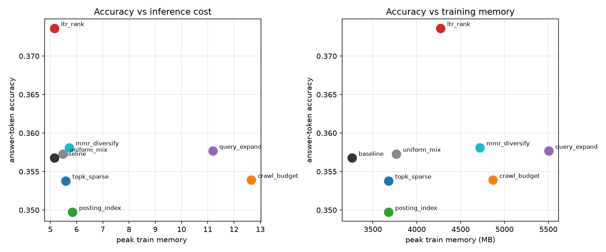
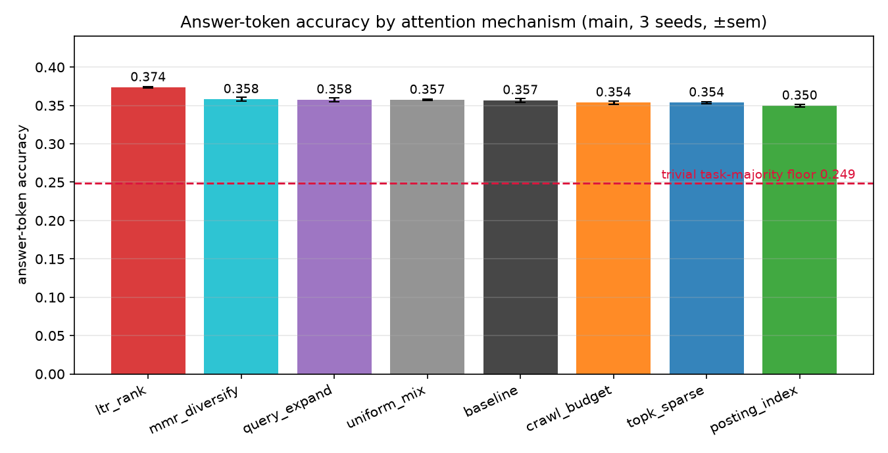
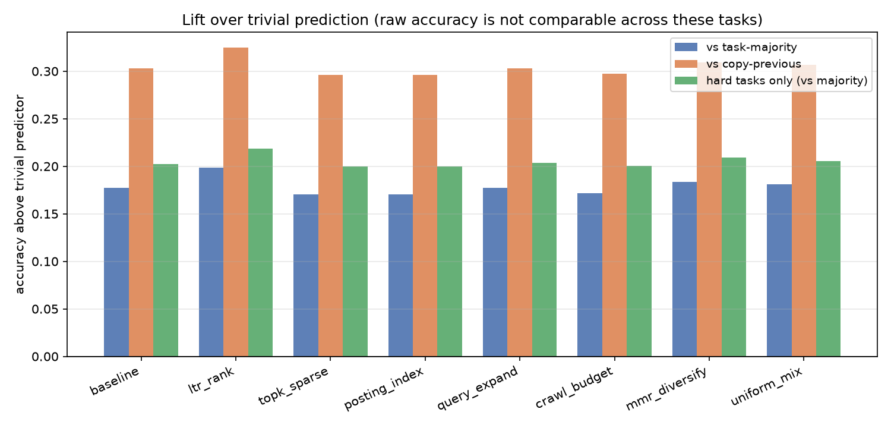
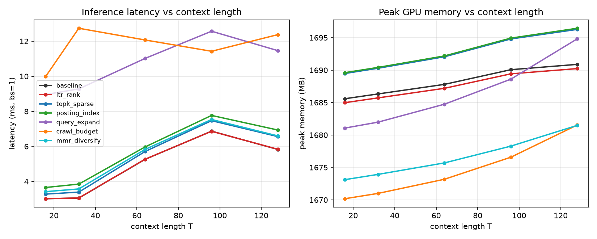
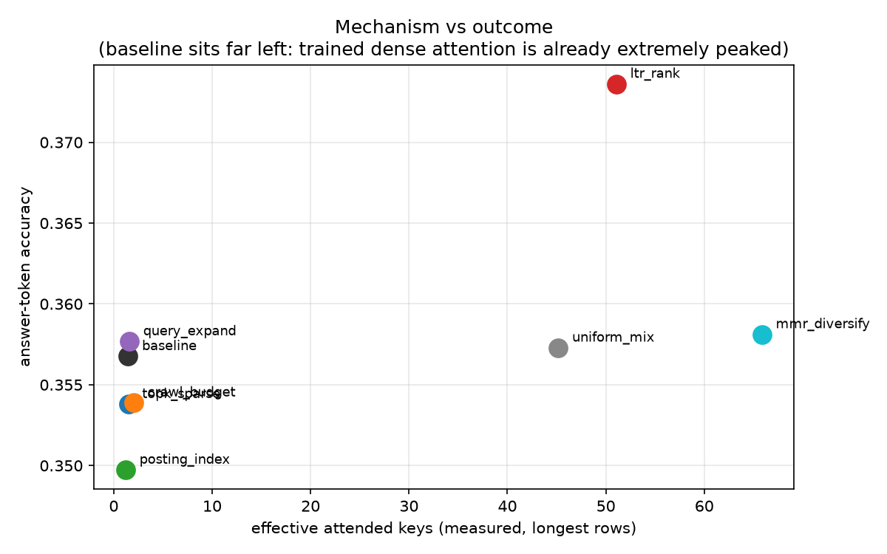
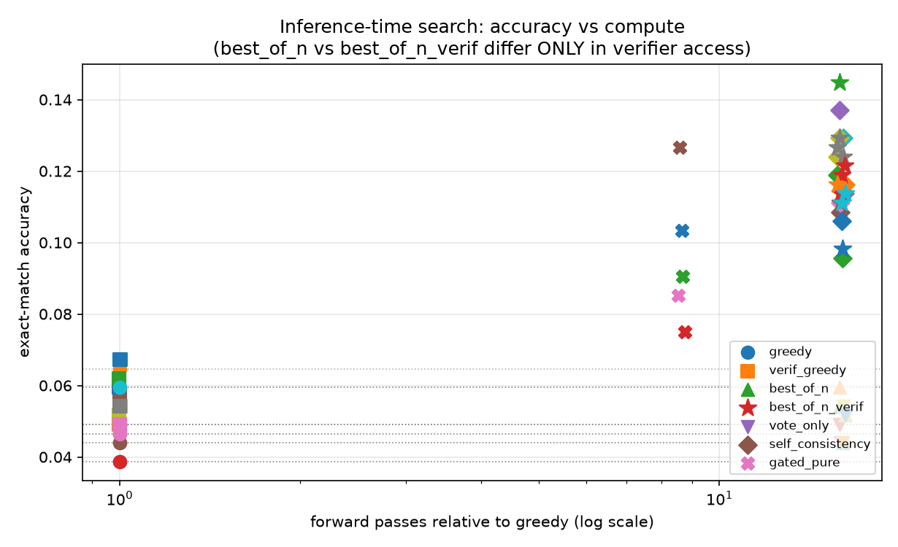
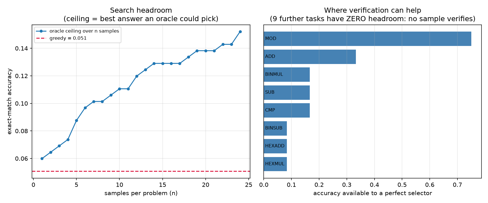

Tested seven attention mechanisms — none beat dense. Then verified that verifier-guided decoding dominates attention selection by an order of magnitude. And a 10M model matched the 99.5M trunk at equal data exposure.
Dense attention's exp-mean row entropy on this corpus. There was nothing left for seven retrieval mechanisms to prune.
The model's own gold-token probability separates its right from wrong next tokens — strong enough to build search on.
On identical samples at identical cost, an exact checker gained 9× what likelihood re-ranking could.
The small trunk matched or beat the big one — token accuracy 0.361 vs 0.357, multi-step exact match 2–4× higher.
Each arm swapped the attention block of a shared ~99.5M-parameter trunk for an IR import. 3 seeds per arm on a leak-free 27-task arithmetic corpus. Accuracy column is pre-EOS-fix (inflated ~+0.09); read the Δ, not the level. Click any arm.
| arm | answer acc* | Δ vs baseline | at equal time | eff. keys |
|---|---|---|---|---|
| learning-to-rank | 0.4657 | +0.0161 (p=.029) | +0.0001 | 51.1 |
| query expansion | 0.4516 | +0.0020 | — | 1.59 |
| MMR diversification | 0.4501 (n=1) | +0.0005 | — | 65.9 |
| baseline (dense) | 0.4496 | — | — | 1.46 |
| crawl budget | 0.4476 | −0.0020 | — | 2.02 |
| top-k (k=32) | 0.4475 | −0.0021 | −0.0065 | 1.53 |
| inverted index | 0.4428 | −0.0068 | −0.0130 | 1.21 ↓ |
* pre-fix answer-token accuracy; arm-vs-arm comparisons are unaffected by the EOS correction.
The diagnosis said stop selecting keys and start searching derivations. Every task has exactly checkable ground truth, so candidates can be tested, not just ranked. Pooled over 3 seeds, Tier-L checkpoints, 16 samples per rollout. Click any row.
| decoding method | exact match | vs greedy | cost × |
|---|---|---|---|
| best_of_n_verif | 0.1120 ±0.0075 | +0.0680 | 16.0 |
| self_consistency (V+vote) | 0.1111 ±0.0098 | +0.0672 | 16.0 |
| gated_pure | 0.0879 ±0.0083 | +0.0439 | 8.65 |
| verif_greedy | 0.0525 ±0.0023 | +0.0086 | 1.00 |
| best_of_n (likelihood) | 0.0508 ±0.0034 | +0.0069 | 16.0 |
| vote_only (no verifier) | 0.0474 ±0.0034 | +0.0034 | 16.0 |
| greedy | 0.0439 ±0.0030 | — | 1.00 |
best_of_n and best_of_n_verif draw identical samples at identical cost and differ in one bit of information — whether an exact checker is consulted. Verifier value: +0.0612. Likelihood re-ranking of the same samples recovers +0.0069, about 11% of that. And vote_only — same compute, no verifier — buys +0.0034 (negative at Tier S). The gain is information the model does not possess.Inference-time methods, so promotion needed no training — just coverage. Both winners were measured on all seven attention arms at 99.5M.
| arm | greedy EM | verif_greedy (1×) | best_of_n_verif (16×) | gain |
|---|---|---|---|---|
| crawl_budget | 0.0646 | 0.0672 | 0.1189 | +0.0543 |
| topk_sparse | 0.0594 | 0.0620 | 0.1214 | +0.0620 |
| mmr_diversify | 0.0491 | 0.0594 | 0.1163 | +0.0672 |
| query_expand | 0.0491 | 0.0543 | 0.1111 | +0.0620 |
| ltr_rank | 0.0465 | 0.0491 | 0.1266 | +0.0801 |
| uniform_mix | 0.0439 | 0.0491 | 0.1292 | +0.0853 |
| posting_index | 0.0388 | 0.0491 | 0.1111 | +0.0724 |
A 10.8M-parameter screening tier (d=384/L6, ~3.5× faster steps) was built to save money. It produced the study's most interesting unplanned finding: at equal data exposure it matched or beat the 9.2×-larger trunk — test token accuracy 0.361 vs 0.357, multi-step exact match 2–4× higher.
The honest half: its replication gate failed for screening attention mechanisms — the small model spreads over 7.8–12 effective keys where the big one holds ~1.5, so pruning arms would look better at Tier S purely because there is more to prune.

An agenda built on inflated numbers is decoration. Three fixes that changed how every result must be read.
The answer mask counted the EOS token as a scored position — inflating every headline by +0.092 absolute.
The one "winning" arm evaporated at matched wall-clock. Every mechanism now reports accuracy against cost.
Two bugs made the verifier silently do nothing — and presented as evidence that search doesn't work.






Predictions, measurements, wrong predictions marked as wrong, and kill criteria that actually killed things — including a hand-written A* deleted for being vacuously perfect.
⬇ Download the paper (PDF)exp(mean row entropy) ≈ 1.5 keys. A trained transformer on this corpus concentrates its attention on about one and a half keys — it has already made the retrieval decision that all seven mechanisms were trying to make better, and made it aggressively.
Consequence: selection-style mechanisms are vacuous here, not weak. You cannot prune a distribution that has already collapsed.
Every trajectory-search method needs a value function. This one exists for free: score how well the model's own probability on the gold token separates its correct from incorrect next tokens (Mann–Whitney AUC, EOS excluded).
The failure mode is compositional, and there's a near-perfect signal for where composition breaks — an open invitation to search over derivations, not keys.
Likelihood-based decoding is bounded above by model accuracy. Verification is not bounded that way at all — that asymmetry is the whole result.
best_of_n vs best_of_n_verif: identical samples, identical 16× cost, one bit of difference — an exact checker. Verifier value: +0.0612.vote_only (same 16 samples, majority vote, no verifier): +0.0034 at Tier L, −0.0026 at Tier S. Extra compute alone buys essentially nothing; the gain is information the model does not possess.Roughly an order of magnitude — measured, isolated, and replicated on 7/7 arms.
The screening tier was meant to save money; it produced a finding. At equal data exposure the 10.8M trunk (d=384/L6/H6) matched or beat the 99.57M one: test token accuracy 0.361 vs 0.357, multi-step exact match 2–4× higher, at ~3.5× faster steps.
The honest half: the Tier-S replication gate failed for screening attention mechanisms — 7.8–12 effective keys vs the big model's ~1.5 regime, so pruning arms would look better at 10M purely because there is more to prune. "Plausible-looking negatives are the most expensive kind of cheap result." It passed critic AUC (0.939–0.964), which is exactly why inference-time search replicated at both tiers.
What it was: learning-to-rank supervision applied to attention rows — the most promising arm, and the most instructive failure.
Why it's interesting: MMR diversification broadens attention even more (65.9) and buys +0.0005 — so spread alone doesn't explain the LTR effect either. "What caused it" stays open; "it was not free compute" does not.
What it was: pseudo-relevance feedback transplanted from IR — expand the query using likely-relevant context, then attend with the expanded representation.
Replacement: subgoal decomposition generates new "queries" legitimately (AO* over verifiable subgoals).
What it was: maximal marginal relevance — diversify attention to avoid redundant keys.
Why it matters: it's the control that kills "broader attention = better" as an explanation for anything, including the LTR arm's original +0.016.
What it was: crawl-budget allocation — spend limited context budget on the most promising keys, like a spider deciding which URLs to fetch.
The idea survived, reframed: "spend limited resource where marginal value is highest" becomes per-token compute allocation — confidence-gated decoding in phase two is exactly that. The IR wrapper was wrong; the economics underneath were right.
What it was: sparse attention — keep only the top-32 keys per row, the classic efficiency move.
The k-sweep {1,2,4,8} confirms where selection starts to bite — and that it bites only when you remove one of the ~1.5 keys that mattered.
What it was: an inverted index inside attention — posting lists generating candidate keys per query, the literal search-engine architecture.
Lesson: restricting candidates is only useful when there are too many. There weren't.
How it works: sample k=16 complete answers, run each through exact task verifiers (integer arithmetic checked in closed form, element conservation for chemistry), return a verified answer rather than the most likely one.
The bound, stated honestly: verification can only select what generation produced. Per-task headroom is exactly zero on 9 of 19 tasks — no sample out of 24 ever verifies there, and no selection policy (best-first, MCTS, A*, arbitrary oracle over samples) can help. Aggregate numbers mix powerful with provably inert; report coverage first.
How it works: sample k paths, keep those that pass the verifier, majority-vote among survivors. Verification plus self-consistency — the verifier prunes, the vote breaks ties between equally valid-looking derivations.
How it works: decode greedily while the model is confident; escalate to branching with the critic when probability mass spreads. Cheapest possible trajectory search — no training, the gate is the 0.928-AUC signal itself.
How it works: constrain each decoding step to tokens that keep some valid completion alive — the verifier prunes the vocabulary per step, so an invalid digit can never be emitted. Changes which token is chosen rather than adding rollouts.
It also turned out to be the non-vacuous form of the abandoned carry-state A*: a hand-written transition function over (column, carry) is the answer and measures nothing. Constrained decoding gets the same benefit legitimately — constraint checking from arithmetic, transitions from the model.
How it works: sample k=16 answers, keep the highest-likelihood one. IR's core move — rank candidates by a score the model already has.
How it works: sample k=16, majority vote, no verifier at all. The control that makes the whole phase-two table interpretable.
The promotion finding: both phase-two winners are inference-time methods sharing weights with whatever arm they're applied to — so promoting them across all seven arms required no training, only coverage (everything before had been measured on baseline checkpoints alone).
The attention mechanism that took 21 training runs to separate is worth less than the decoding policy applied afterwards — the study's main thesis in one row-span comparison.
The bug: every dataset row appends an end-of-sequence token, and the answer mask counted it as a scored answer position — one free, ~95%-predictable hit per row.
Arm-vs-arm comparisons hold; absolute claims do not. Fixed with a permanent assertion that no scored position targets EOS — marked [pre-fix] throughout the paper until rescored from saved checkpoints.
The trap: comparing arms at equal optimizer steps hides that they cost different amounts per step: query expansion +68%, crawl budget +96%, MMR +25%, LTR +22% over baseline.
This is why the phase-two tables carry a cost column: verif_greedy at 1.00× means something that +0.0069 at 16× does not.
The failure mode: two separate bugs made the verifier silently do nothing — a missing vocab argument swallowed by an "undecidable" exception guard, and a trailing EOS making exact match 0.00 on every row. Both presented as evidence that search does not work, while unit tests of verifier logic passed throughout.
tests/test_search_wiring.py: asserts the seam — no un-vocab'd verifier calls, no EOS leaking into answers, selection must equal its oracle.